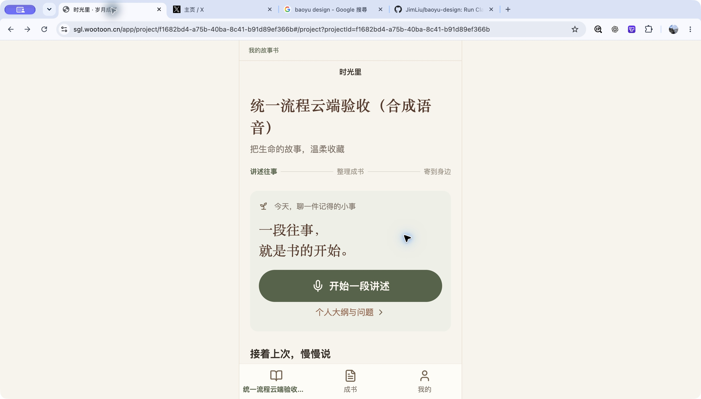
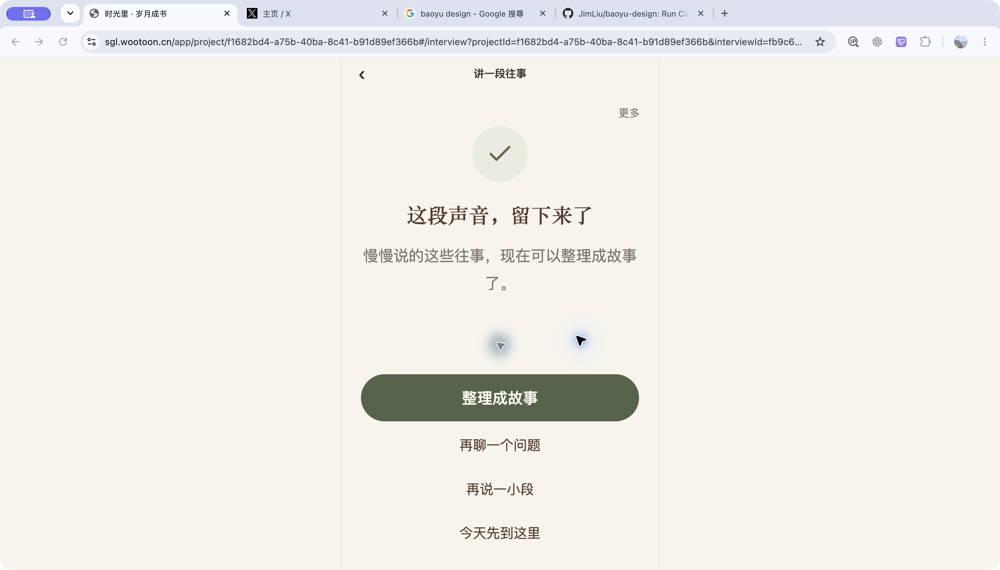
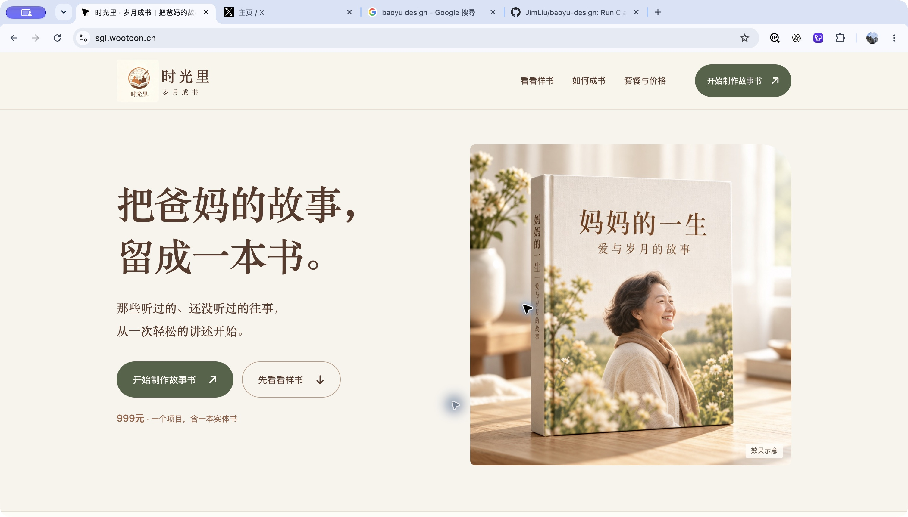
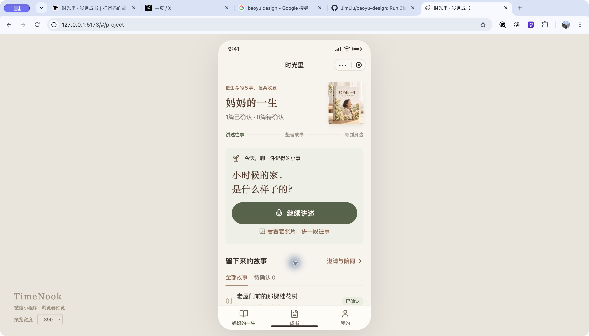
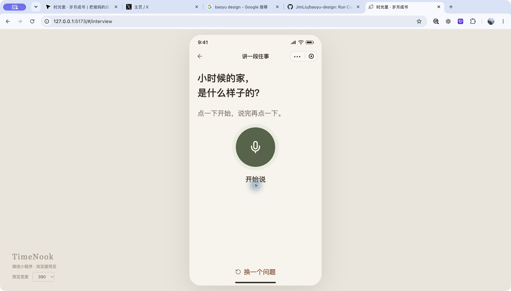

今天做什么，一眼就知道。
当前行动、最近一段、待确认故事居前。历史任务进入详情，故障保留醒目入口。
设计提案 · 待评审
品牌已有自己的样子。这次重点重新安排信息与操作：让讲述成为中心，让保存、核对和成书各有清楚的位置。
当前行动、最近一段、待确认故事居前。历史任务进入详情，故障保留醒目入口。
选题、准备、录制、回听、保存、核对按阶段出现。照片、自拟与自由讲述不丢失。
原声与转录可对照；确认区只保留一个按钮，按当前入书用途记录本版决定。发起人走邀请或当次协助。
改稿提示生成新版；完整 PDF、同版双方确认、发起人地址逐项清楚。内测生产关闭。
以下为这次实际捕获的界面。小程序截图来自最新源码的共源 demo；没有把它当作微信原生 live 或真机验收。

品牌和主行动清楚。多个恢复入口、故事与历史任务纵向堆积，当前优先事项容易被淹没。
当前合成语音验收项目。任务列表来自同页可访问文本，截图展示首屏。
整理故事按钮明确。建议就近补充云端封存与转写状态，减少“留下来了”的理解成本。
没有在此走查中提交故事确认或执行真实生产。
配色、宋体、书籍效果图可保留。首屏“开始制作故事书”需就近说明是内测入口，避免被理解为已可正式购买。
样书和套餐保留。内测说明与实际账号、销售装配需一致。
温暖、直观，大问题卡值得保留。调整首屏密度，让最近讲述和待确认更早出现。
390 px 浏览器共源预览。live 故障与任务分组另外按源码梳理。
问题与大录音按钮清楚。demo 尚不能表达当前 live 的暂停、回听和可靠保存全状态，设计采用最新统一规格。
未点击麦克风，没有采集用户声音；权限、中断与后台行为留待真机验证。| 统一 | 手机网页／桌面网页 | 微信小程序 |
|---|---|---|
| 页面目标、步骤、保存事实、版本确认与用途选择 | 同源登录会话、浏览器录音权限、文件缓存与下载；桌面左导航，手机底导航 | 微信登录、原生导航和胶囊、安全区、RecorderManager、微信文件接口与分享 |
| 纸色、橄榄绿、宋体标题、大字问题与故事、状态组件 | 宽屏内容分栏，故事区限制阅读宽度；手机变单列 | 手机单列；触控区域与长辈阅读优先；真机验证原生键盘和切后台 |
| 批次 | 改动重点 | 验收重点 |
|---|---|---|
| U01 / P0 | 共用 token、操作层级、保存与授权状态约定 | 两端同状态同事实；不能把本机保存写成云端已保存 |
| U02 / P1 | 项目首页与分步讲述；同步网页独立 live 渲染 | 暂停继续、回听重录、弱网重试、恢复原录音、可选追问 |
| U03 / P0 | 故事阅读、原声／转录、单按钮确认与操作记录 | 角色权限、本人证据、故事版本变化、旧确认失效 |
| U04 / P1 | 成书、完整 PDF、同版确认、制作条件 | 实际 PDF、双方同版、唯一首本、生产未知和内测关闭 |
| U05 / P1–P2 | 官网／登录、动态关系、邀请、大纲、我的、服务 | 内测与销售清楚；不退回父母二选一；服务与安全期限分开 |
| U06 / P0 | 双端增量检查、官方编译与真实设备 | 320–430、键盘／大字、Safari／Chrome、微信录音中断与弱网 |
全部 25 条原生路由、具体源码、异常状态与批次依赖见仓库文档
docs/frontend/ui-review-2026-10-30.md，可从 Codex
交付的文件链接打开。
资料用途页现已简化为一句说明和「确认并开始」按钮，详情默认折叠。无需四组逐项选择，点击一次即可确认并进入录音准备。
故事确认去掉复选框和手填说明，只保留「确认」；选题的主、次操作上下分行。正式前端仍需适配单按钮的版本决定和操作记录。
保存与文字处理已核对 main 的 404a137：上传层支持成功／失败与封存结果，任务接口支持排队、处理、完成、失败等状态，当前没有上传或转写百分比。提案改为当前状态卡，不按时间自动完成；评审栏可切换状态查看。
最新源码核对至 main 的 404a137；当前工作区基于 afe149c，原有未提交改动保留。本轮新增提案，没有更新业务代码、GitHub Issues 或部署。
截图无法证明完整无障碍合规；小程序共源预览无法替代原生设备。原型的音频、云端、授权、PDF 和制作只演示交互，服务弹层尚不是完整业务表单。目标长辈可用性与真实微信、供应商、资金和实物结果均需另留证。
回到高保真原型